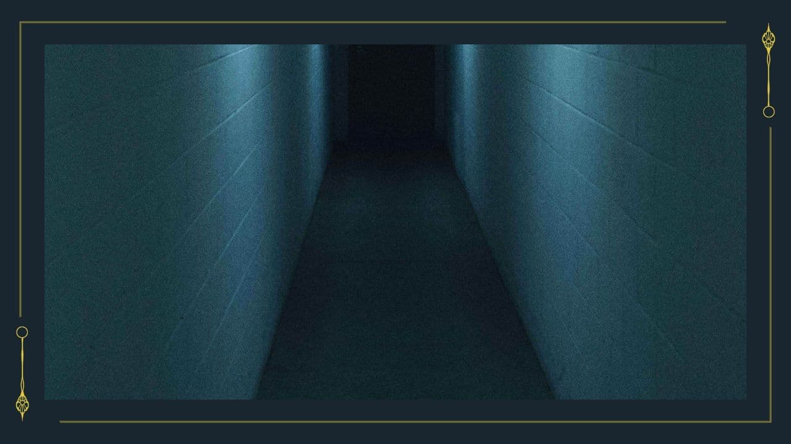

【隠し通路】
あなたたちは隠し通路がある場所へ向かった。
どうやら、この館は館内図の外側に一回り通路がある。
窓はないが電球が付いており、問題なく歩くことはできる。位置関係からして「8の部屋」「6の部屋」「キッチン」にはこの隠し通路に続く扉がありそうだ。他の客室に関しては、床に小さな扉があり子供であれば入れそうだ。
※PLへ
「スクリーンパネルD」を表示にしてください。
スクリーンパネルD
あなたたちは隠し通路がある場所へ向かった。
どうやら、この館は館内図の外側に一回り通路がある。
窓はないが電球が付いており、問題なく歩くことはできる。位置関係からして「8の部屋」「6の部屋」「キッチン」にはこの隠し通路に続く扉がありそうだ。他の客室に関しては、床に小さな扉があり子供であれば入れそうだ。
※PLへ
「スクリーンパネルD」を表示にしてください。
スクリーンパネルD
【HO：支え繋ぐもの】0325日にここに来て目星を成功していた場合のみクリック
【隠し廊下】 【HO：解き明かすもの】のみクリック可能
【隠し廊下】 成功したらクリック

【隠し部屋】
さらに驚いたことに、３階への階段、そして扉を見つける。アルメリアの花が彫刻された扉だ。特殊な鍵が必要なようだ。扉の近くには、封筒が２つ置かれている。
※隠し通路について 他の招待客に開示する場合、1探索時間がかかります。
探索個所選択時に、【会話アイコン】を選択してください。
さらに驚いたことに、３階への階段、そして扉を見つける。アルメリアの花が彫刻された扉だ。特殊な鍵が必要なようだ。扉の近くには、封筒が２つ置かれている。
※隠し通路について 他の招待客に開示する場合、1探索時間がかかります。
探索個所選択時に、【会話アイコン】を選択してください。
【空色の封筒２】 詳しく見る
【空色の封筒３】 詳しく見る
【３階扉】 【HO：支え繋ぐもの】のみ成功したらクリック可能